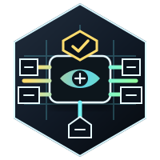

Execution Plane Workspace
This repository is a non-umbrella Mix workspace. The repository root is a
tooling project only; it is not the execution_plane Hex package.
The public execution_plane 0.1.0 Hex package is generated with released Weld
0.8.4 from three independently testable source units:
core/execution_planeprotocols/execution_plane_jsonrpcruntimes/execution_plane_process
Blitz, Weld, and workspace orchestration live only in the root tooling project
and do not enter the generated runtime dependency graph. Canonical changes stay
in the component source homes; projection/execution_plane is generated
release evidence.
Execution Plane is the lowest runtime substrate in the ranked stack. It owns packets, lane protocols, placements, target attestations, runtime-client contracts, and raw lower evidence. It does not own product intent, governance policy, connector semantics, or durable workflow truth.
Stack Position
products / AppKit / Mezzanine / Citadel / Jido Integration
-> ExecutionPlane.Runtime.Client
-> execution_plane_node
-> process, HTTP, JSON-RPC, SSE, WebSocket, terminal lanes
-> concrete runtimes and targetsHigher layers decide why something should run and what authority applies. Execution Plane decides whether a lower execution request is structurally valid, whether the target and attestation are acceptable, which lane can carry the request, and what lower evidence packet describes the result.
The node is intentionally lane-neutral. It can route to registered lanes and verified targets, but it must not invent fallback ladders or infer business semantics. If a policy owner allows multiple target classes, that owner issues separate runtime-client calls and records each rejected or accepted rung.
What The Public Distribution Carries
The generated execution_plane package carries shared lower values and
behaviours plus JSON-RPC framing and the process runtime:
- admission requests, decisions, and rejections
- authority refs and host-registered authority verifiers
- sandbox profiles and acceptable attestation classes as opaque policy data
- target descriptors, target attestations, target clients, and target verifiers
- execution requests, results, events, refs, evidence, and provenance
- placement descriptors for local, SSH, and guest targets
- lane adapter behaviours and capability descriptions
- lower-boundary simulation and conformance helpers
- JSON-RPC framing and correlation
- process, PTY, stdio, guest-bridge, and lower-simulation transport surfaces
The common package does not enforce an OS sandbox by itself. It carries policy and evidence. Real isolation claims must come from a verified target and a lane/host implementation that can substantiate the attestation.
Current Delivery State
The current checkout has a usable common package, process lane, HTTP lane, JSON-RPC lane, SSE/WebSocket stream lanes, runtime node, and operator-terminal package. StackLab currently proves node composition through local process/HTTP execution, target-attestation rejection, authority rejection, and Jido Integration-owned fallback evidence.
Recent work fixed dependency-source fallback behavior, added the local TRE Rhai runner lane under the process package, added target posture attach contracts, required lower authority refs, governed process environment inheritance, and cleaned up atom/regex/env hazards.
The Synapse governed-effect lift adds the deterministic diagnostic lane used by
StackLab staged-live proof. ExecutionPlane.Lanes.DiagnosticLane validates a
lower execution request, runs the selected diagnostic action, applies timeout
and output-size limits, and returns an ExecutionPlane.DiagnosticResult through
the common execution result shape. It is deliberately provider-neutral: higher
layers decide authority, product meaning, and connector placement; Execution
Plane only owns lower request validation, lane execution, and result evidence.
The cross-stack conformance command is:
cd /home/home/p/g/n/stack_lab
MIX_ENV=test mix stack_lab.synapse.staged_live.v1 --json
Maintainers should read Code Smell Remediation before changing subprocess transport state, public starts, OS command ownership, file spooling, or guest bridge state.
Runtime Diagrams
flowchart TD
Client["Runtime<br/>client"] --> Request["Execution<br/>request"]
Request --> Authority["Authority<br/>verifier"]
Request --> Target["Target<br/>verifier"]
Authority --> Decision["Admission<br/>decision"]
Target --> Decision
Decision --> Node["Runtime<br/>node"]
Node --> Process["Process<br/>lane"]
Node --> HTTP["HTTP<br/>lane"]
Node --> JSONRPC["JSON-RPC<br/>lane"]
Node --> Streams["Stream<br/>lanes"]
Process --> Evidence["Evidence<br/>packet"]
HTTP --> Evidence
JSONRPC --> Evidence
Streams --> Evidenceflowchart LR
Policy["Higher<br/>policy"] --> Calls["Runtime<br/>calls"]
Calls --> Strong["Strong<br/>rung"]
Calls --> Weak["Weak<br/>rung"]
Strong --> Rejected["Rejected<br/>evidence"]
Weak --> Accepted["Accepted<br/>evidence"]
Rejected --> Owner["Fallback<br/>owner"]
Accepted --> OwnerDeveloper Flow Diagrams
flowchart TD
Client["Runtime<br/>client"] --> Node["Runtime<br/>node"]
Node --> Caps["Lane<br/>capabilities"]
Caps --> Adapter["Lane<br/>adapter"]
Adapter --> Events["Runtime<br/>events"]
Adapter --> Result["Lower<br/>result"]
Events --> Sink["Evidence<br/>sink"]
Result --> Sinkflowchart LR
Request["Execution<br/>request"] --> Auth["Authority<br/>verify"]
Request --> Target["Target<br/>verify"]
Auth --> Sandbox["Sandbox<br/>constraints"]
Target --> Attest["Attestation<br/>class"]
Sandbox --> Decision["Admit<br/>or reject"]
Attest --> Decision
Decision --> Evidence["Evidence<br/>packet"]Mix Projects
The checkout contains exactly eight active component Mix projects:
core/execution_plane: common substrate selected intoexecution_planeprotocols/execution_plane_http: unary HTTP laneprotocols/execution_plane_jsonrpc: JSON-RPC framing and correlation, selected intoexecution_planestreaming/execution_plane_sse: SSE framing and stream lifecycle lanestreaming/execution_plane_websocket: WebSocket handshake/frame laneruntimes/execution_plane_process: process/PTY/stdio lane selected intoexecution_plane, and the sole owner oferlexecruntimes/execution_plane_node: lane-neutral runtime node and localExecutionPlane.Runtime.Clientruntimes/execution_plane_operator_terminal: operator-facing terminal runtime, kept separate so base consumers do not inheritex_ratatui
The root mix.exs is :execution_plane_workspace; it exists to run Blitz
workspace tasks, Weld projection/release tasks, root documentation, and
repository-level checks.
Installing Packages
Add the common substrate package when you need contracts, codecs, placement descriptors, runtime-client behaviours, evidence envelopes, and pure helpers:
def deps do
[
{:execution_plane, "~> 0.1.0"}
]
endVersion 0.1.0 already includes JSON-RPC and process execution. Separate lane or host packages are added only for capabilities outside that frozen public foundation, for example the node host:
def deps do
[
{:execution_plane, "~> 0.1.0"},
{:execution_plane_node, "~> 0.1.0"}
]
endDownstream SDK users normally should not add Execution Plane deps manually.
For example, CLI provider SDKs get local subprocess execution transitively
through cli_subprocess_core, and REST/GraphQL-only SDKs should stay above
their HTTP or GraphQL family kit.
Development
Run the workspace gate from the repository root:
mix deps.get
mix ci
The root gate uses Blitz to run package-local mix ci aliases for every
active package. Package gates can still be run directly:
cd core/execution_plane && mix ci
cd protocols/execution_plane_http && mix ci
cd protocols/execution_plane_jsonrpc && mix ci
cd streaming/execution_plane_sse && mix ci
cd streaming/execution_plane_websocket && mix ci
cd runtimes/execution_plane_process && mix ci
cd runtimes/execution_plane_node && mix ci
cd runtimes/execution_plane_operator_terminal && mix ci
Publishing
Prepare the public package from the repository root, then inspect the generated distribution:
mix weld.inspect --artifact execution_plane
mix weld.project --artifact execution_plane
mix weld.verify --artifact execution_plane
mix release.prepare --artifact execution_plane
The package directory is dist/monolith/execution_plane, and the durable
generated branch is projection/execution_plane. Real Hex publication and the
post-publication tag are human-owned release actions. Publish the generated
execution_plane package before any separate lane or host package that depends
on it.
Sandbox And Target Honesty
The common contracts carry ExecutionPlane.Sandbox.Profile and
ExecutionPlane.Sandbox.AcceptableAttestation values as opaque policy and
target-selection data. They do not enforce a sandbox by themselves.
local-erlexec-weak means local process execution with weak local
attestation. It is not a container, microVM, or cryptographic isolation claim.
Stronger target classes must be backed by a host-owned verifier and target
protocol evidence before they enter the node routing table.
License
MIT
Persistence Documentation
See docs/persistence.md for tiers, defaults, adapters, unsupported selections, config examples, restart claims, durability claims, debug sidecar behavior, redaction guarantees, migration or preflight behavior, and no-bypass scope when applicable.
Trial Replay & Scoring Lane Role
Execution Plane executes replay and scoring lanes for Chassis Evolution
candidates. Chassis.Evolution.Scorer can invoke Execution Plane lanes to
replay a failure batch and baseline cases against an isolated trial worker,
then return bounded lane evidence to Chassis and Mezzanine for scoring
reduction. Lane jobs remain sandboxed replay jobs with explicit authority,
target, timeout, output bounds, and evidence packet refs.
ExecutionPlane Executes; Chassis Provisions
Chassis provisions the isolated trial runtime, host placement, mount posture, release/image candidate, and rollback checkpoints. Execution Plane runs the lanes. Chassis does not own job execution semantics; Execution Plane does not own substrate placement, Chassis receipts, or candidate promotion authority.